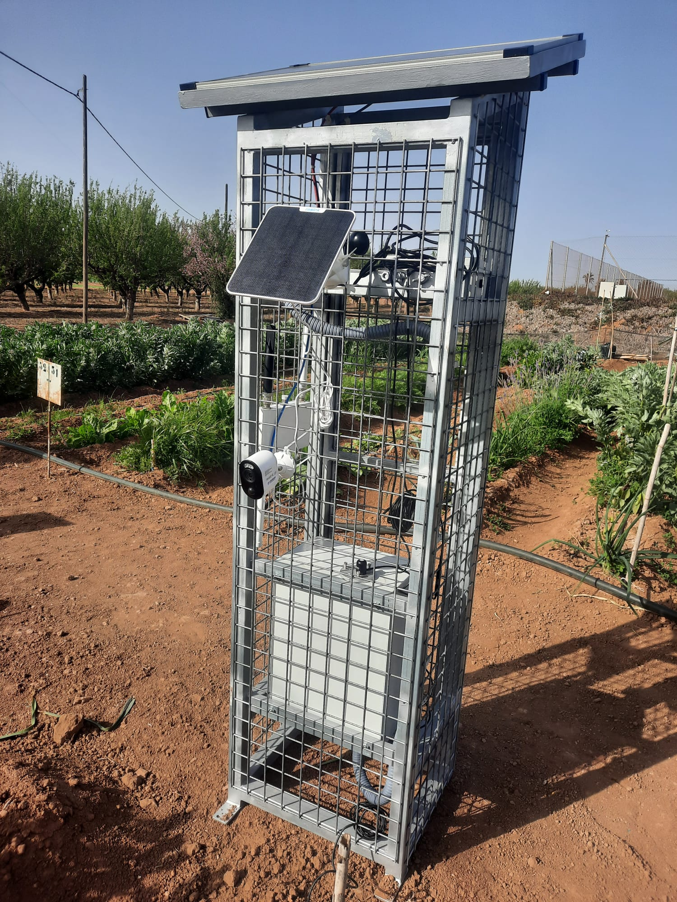
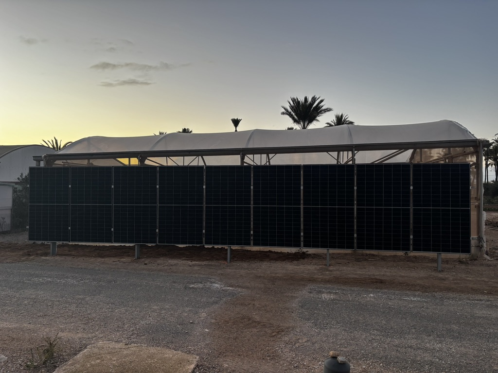
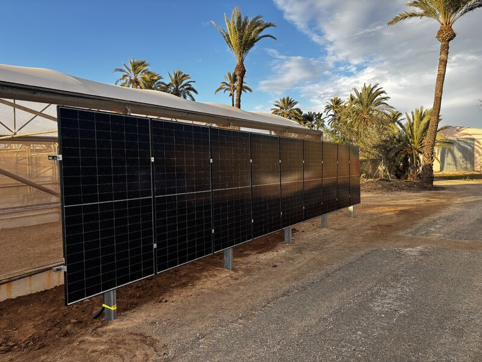
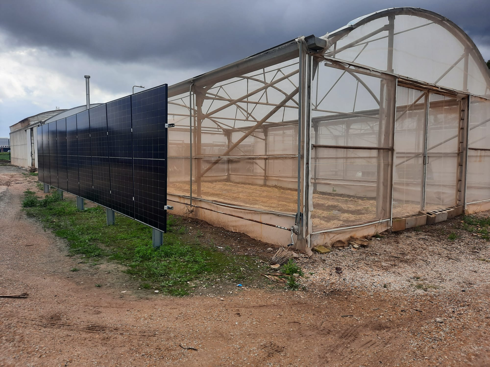

用水量
基于农艺数据和实际田间条件的灌溉优化。
Qartia 通过适合农业运营、温室和农村环境的传感化 IoT、人工智能、数字孪生、农业光伏和无线连接来促进农村的数字化转型。
我们的技术可以实时监测作物、微气候、土壤、水、能源和基础设施，生成统一的操作层，以更精确、更少的不确定性做出决策。
通过 Qartia，农场可以预测灌溉、施肥、作物胁迫和能源消耗，纳入旨在可衡量经济回报的运营建议和试点。
作为差异化价值，Qartia 将农业运营与无线网络、边缘部署、高级分析和自我消费模型相结合，使其能够向更高效、更有弹性和更有活力的自主农场发展。
基于农艺数据和实际田间条件的灌溉优化。
更好地调整农场的种植、小气候和运营决策。
减少水、肥料、能源和低效运行时间。
具有可验证的技术和经济影响的执行试点设计。
这些值是指示性估计值，必须根据作物、位置和基础设施在试点中进行验证。
该漏洞利用响应较晚，因为数据到达时是碎片化的，或者到达时没有必要的连续性。
操作调整是按照固定规则进行的，没有持续读取作物的真实状态。
农村或温室覆盖范围影响数据的可靠性并延迟决策。
当生产影响已经可见时，就会发现偏差。
灌溉、能源、气候和生产各自为政，无法最大限度地提高整体绩效。
如果没有结构化的试点和明确的关键绩效指标，就很难证明大规模实施的合理性。

IoT 用于土壤、环境、辐射、二氧化碳、湿度和温度等的传感器。

适用于农村环境的强大网络：无运营商的私有网络 (LoRa/DECT NR+) 或有运营商的网络 (NB-IoT)。

人工智能模型可预测灌溉、施肥、水资源压力和关键条件。

作物的操作建议、自动化和持续改进。
持续监测作物、小气候和基础设施。
预测水、营养和能量需求。
模拟场景以优化决策，而无需承担操作风险。
太阳能发电、遮阳、可用光和农业产量之间的平衡。
农场、温室和偏远地区可靠的私人连接。
减少水、肥料、能源和运营成本。
从现场捕获变量、对其进行处理并将其转换为农场的视觉决策或行动的完整流程。
该平台可以部署在云、本地或混合架构中，与现有传感器集成或与其自己的部署 Qartia 集成。

Qartia 允许您设计和操作平衡农业生产和太阳能发电的农业光伏系统。通过模拟、人工智能和传感化，开发可以朝着自我消耗和能源独立的模式发展。

作物选择、开发、基础设施和 KPI。
安装传感器、验证覆盖范围和数据质量。
预测模型、可操作的警报和技术建议。
影响报告、经济建议和实施计划。
Qartia 将无线连接（无运营商专用 - LoRa/DECT NR+ 或传统运营商 - NB-IoT）、应用人工智能、数字孪生、农业光伏、运营优化和 ROI 焦点集成在单一平台中。
执行摘要、能力、架构、农业光伏和试点提案，格式为演示和印刷准备。